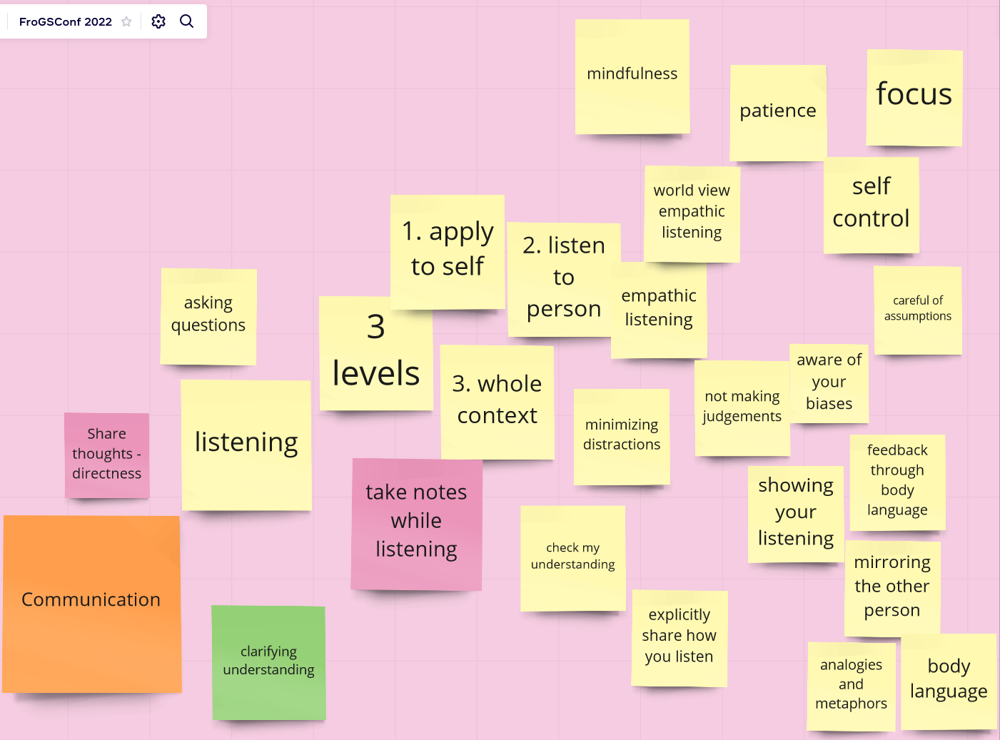
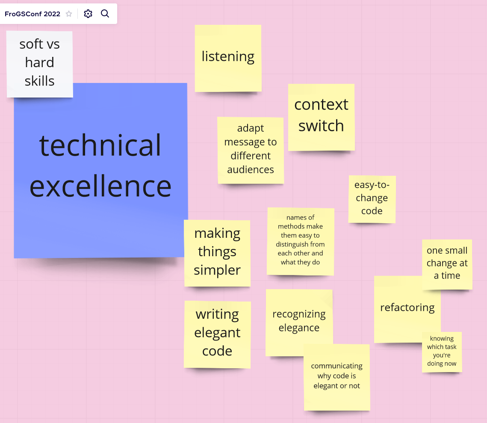

Uncovering Agile micro-skills at FroGS conf
At the second FroGS conf Open Space on 12 March 2022 I facilitated a session based on my blog post "Four skills to embody the four Agile values". My goal with the session was to uncover more Agile (micro-)skills. In this post I'll share what we did during the session and I'll close off with some thoughts on the biggest challenge of this exercise: too many skills. Before I start however, a big thank you to everyone who participated in the session!
What we value
I opened the session with asking people to add stickies to the board of things they valued in Agile software development. When was I preparing the Miro board before the session, I labeled this part of the board "values". Then I remembered I had decided earlier to label it "what we value", so as to avoid the discussion about what values are and aren't. The topic did come up (i.e. the relation between values, ethics and morals), so I was glad I could respond by saying it's a great topic, but not for this session.
We ended up with 28 stickies of things we value. Clustered by me for this post and in no particular order:
- focus on business value, to talk to the users, outcomes over output, results
- self-organization, autonomy, collaboration
- people with skills
- humanity
- trust, open for discussion, brainstorming, motivate each other, share goals
- flexibility, being flexible with changes
- fun
- art, creativity (x2), beauty/elegance, simplicity
- quality
- knowledge, learning, continuous improvement, feedback
- showing progress, transparency
My initial idea was to have participants draw arrows from the things they value to the skills. Early on in the session I realized that would get very messy (and not in a helpful way), so I dropped the idea. This reduced the "what we value"-part to a warm-up exercise. I think it's valuable to do something like it, instead of dropping straight into the skills part, but that also means it could take a different shape. For example, asking the participants for stories about daily standup meetings and then during the skills-part focus on the ones relevant to the daily standup.
Skills
Next I asked people to add stickies with skills related to Agile software development:
- collaboration
- ability to compromise
- leadership
- taking ownership, asking ownership
- apply thinking from different angles
- vulnerability
- bravery
- do good enough and kill perfectionism
- abstraction
- visualisation
- communication
- technical excellence
In the remaining time of the session we explored two of those skills. The first skill we looked deeper into was "communication". Very quickly someone mentioned the sub-skill of "listening" and that become our focus. The second skill we examined, was "technical excellence". Having such a different second skill, definitely made the session more interesting.
Listening
Our exploration of listening looked like this:

As mentioned above we very quickly moved from "communication" to "listening". This prompted someone to share the idea of three levels of listening: applying what you hear to yourself, listening to the person, and listening to the whole context. We then started focusing on that second level (empathic listening) and what is required to do that well, for instance being aware of your own biases. This was typical for the whole session: we kept identifying more and more skills - and each of those could be examined further still.
During the conversation I kept challenging the participants to come up with smaller and more concrete (sub-)skills. A conversation about how to show you are listening, for example through body language, lead to the idea of mirroring the other person. You consciously copy someone's body language to build rapport. Another approach to mirroring is to use similar analogies and metaphors as the other person. At that point I felt we got to the level I wanted to reach. The skill of verbal and non-verbal mirroring is not too broad, which would be the case for the skill "building rapport". It's also not overly specific or narrow, which would be the case for the skill "using similar metaphors".
Technical excellence
With the time we had left in our session, we explored technical excellence:

A discussion that ensued almost immediately was if technical excellence was only about being able to do technically excellent things, or also about communicating about and collaborating on such things. We didn't resolve this question. We noted it as a topic of discussion and moved on.
Another interesting question we discovered, but not really answered was: what is elegance? How do you recognize it? How can you learn to recognize it? Should we start studying aesthetics?
One thing I appreciate about both questions is that they came up in a discussion about something you could label as a "hard" skill, i.e. technical excellence. That shows yet again that the distinction between "hard" and "soft" skills has very limited value.
The challenge: too many skills
The main thing this session showed to me is that it's all too easy to end up with a list of hundreds of skills. And that's too many to be manageable or teachable.
At the moment I see two possible solutions to get to a shorter list. One is to focus on skills that are more generally applicable, such as the skill of "detaching" I mentioned in my previous blog post. It's a skill that will serve you well in meetings, but also when testing or writing code.
The other potential solution is to make it an opiniated list. To create it based on certain assumptions and values that then inform the choice of skills. And that opens up the possibility of different styles (or even schools?) of Agile software development, defined by different people based on what fits for them.